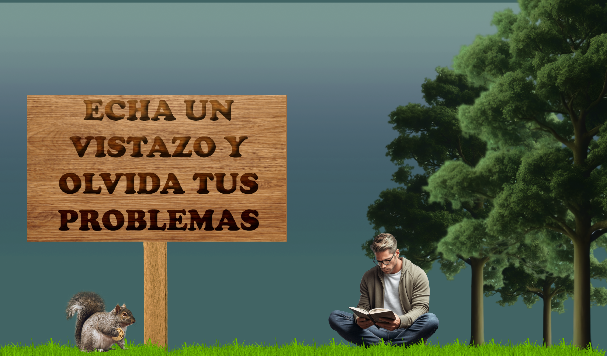
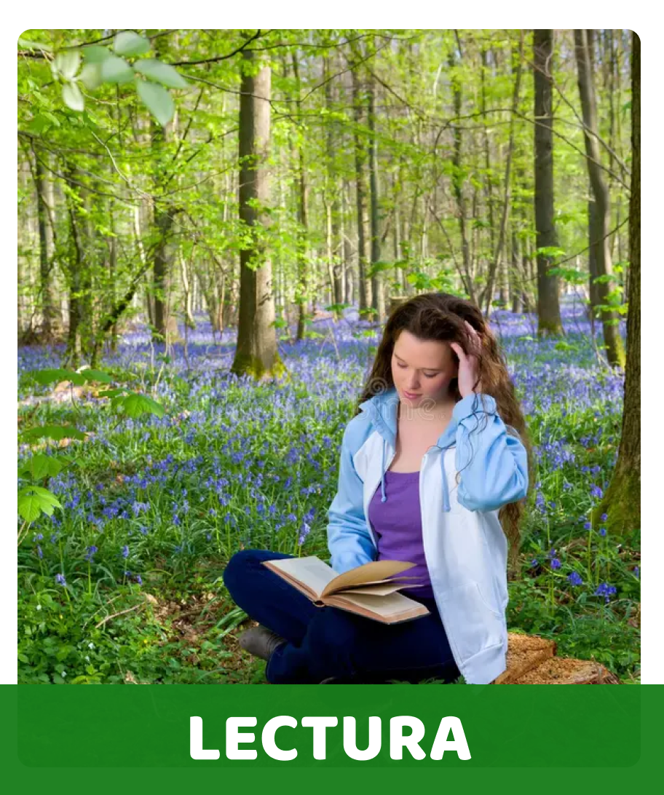
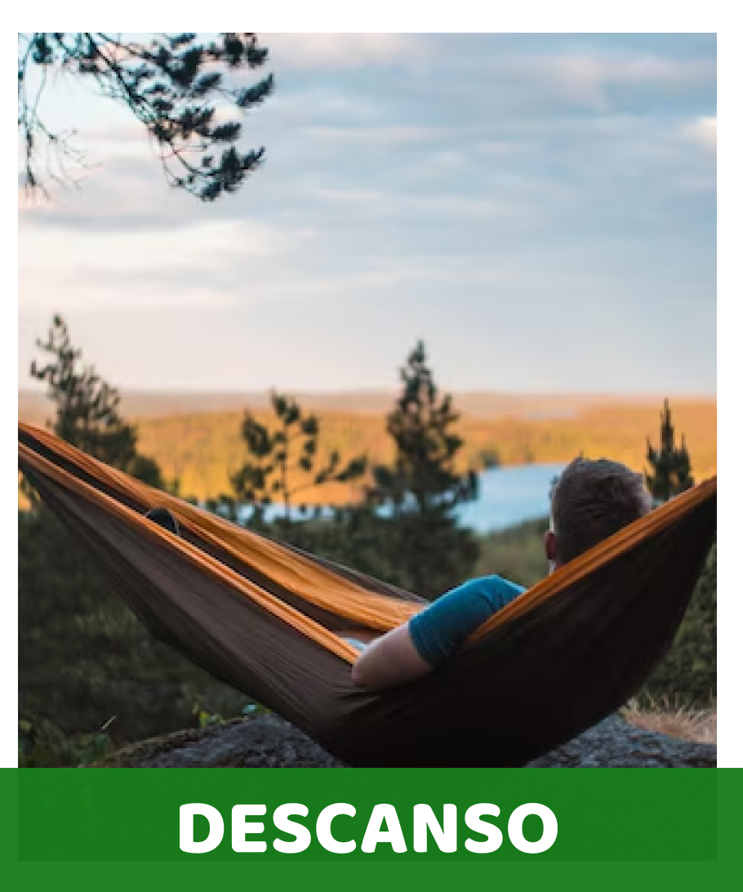
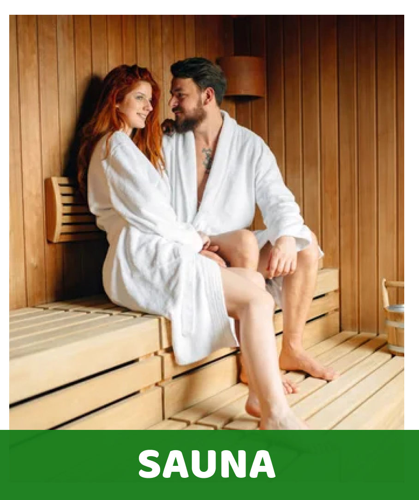
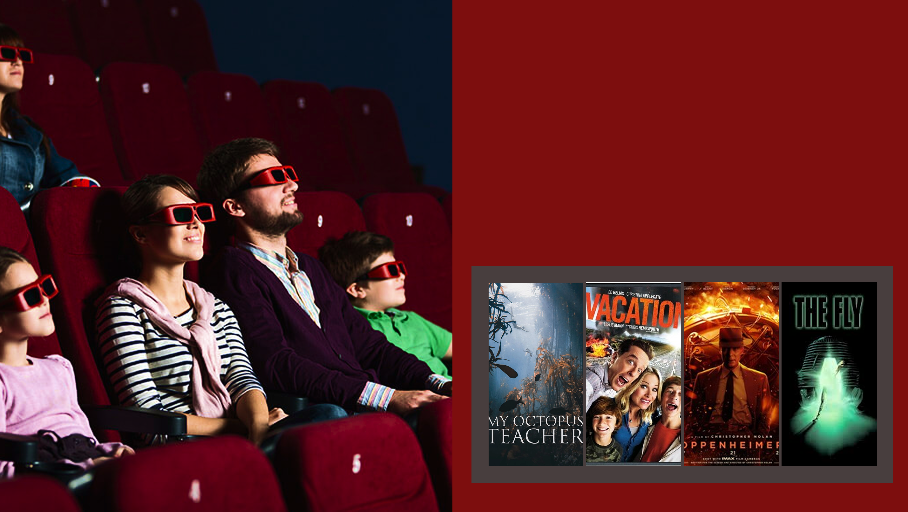

Disfruta de cuatro funciones diarias con una selección
variada de filmes: el documental marino “mi maestro el
pulpo”, la comedia “vacation”, el drama biografico
“Oppenheimer” y el clásico remasterizado “la mosca”.
Cada proyección está diseñada para ofrecerte un escape
relajante y sofisticado dentro de tu recorrido acuático.
SALA DE CINE
variada de filmes: el documental marino “mi maestro el
pulpo”, la comedia “vacation”, el drama biografico
“Oppenheimer” y el clásico remasterizado “la mosca”.
Cada proyección está diseñada para ofrecerte un escape
relajante y sofisticado dentro de tu recorrido acuático.